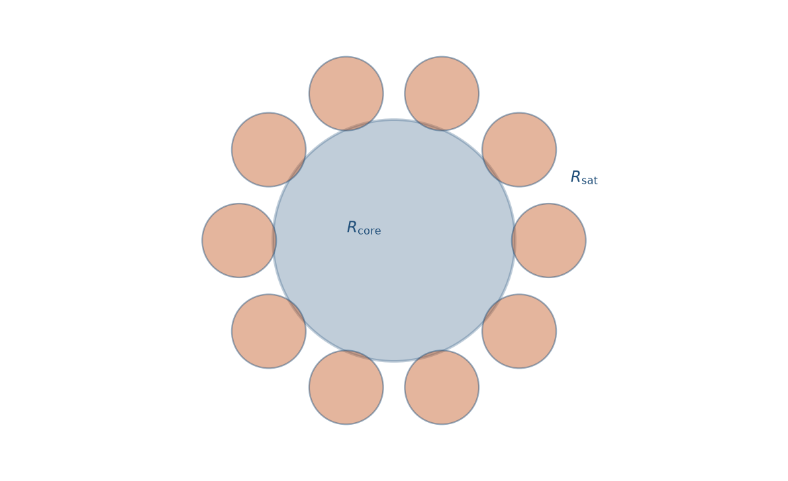
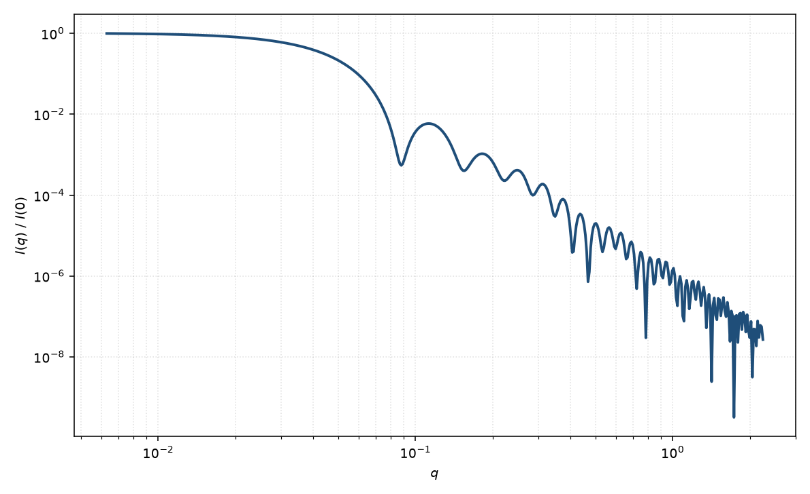

树莓
raspberry
适用场景
树莓粒子由较大核球与吸附或化学锚定在表面的许多小球组成，形如覆盆子。对象包括 Pickering 乳液表面的纳米颗粒层、核表面装饰的金/硅球簇，以及“大胶体 + 小卫星”的层级组装（Larson-Smith 与 Pozzo 及相关散射模型）。
曲线上常同时看到核半径决定的低 $q$ 振荡与卫星半径决定的高 $q$ 特征；卫星之间的表面相关会在中间 $q$ 给出额外调制。若卫星已熔成连续壳，应改核壳球。
物理图像
总振幅 ≈ 核振幅 + 各卫星振幅乘以相位因子 $\mathrm{e}^{i\mathbf{q}\cdot\mathbf{r}_j}$。取向与卫星位置平均后，交叉项含 $\mathrm{sinc}(qL)$，$L=R_{\mathrm{core}}+R_{\mathrm{sat}}$，卫星–卫星项含 $[\mathrm{sinc}(qL)]^2$ 或表面液体样结构因子。强度因此不是两种球 $P(q)$ 的简单相加。
示意图


核心公式
出发点
大核加 $N$ 个表面卫星球。总振幅是核与各卫星相位因子之和
$$F(\mathbf{q})=F_c(\mathbf{q})+\sum_{j=1}^{N}F_s(\mathbf{q})\,\mathrm{e}^{i\mathbf{q}\cdot\mathbf{r}_j}.$$卫星中心落在半径 $L=R_c+R_s$ 的球面上。单球振幅来自体积分：$F_c=V_c\Delta\rho_c\Phi(qR_c)$，$F_s=V_s\Delta\rho_s\Phi(qR_s)$，$V=4\pi R^3/3$，$\Phi(x)=3(\sin x-x\cos x)/x^3$。
推导
$|F|^2=|F_c|^2+N|F_s|^2+2F_c F_s\sum_j\mathrm{e}^{i\mathbf{q}\cdot\mathbf{r}_j}+\sum_{j\neq k}F_s^2\mathrm{e}^{i\mathbf{q}\cdot(\mathbf{r}_j-\mathbf{r}_k)}$。取向及卫星位置各向同性平均：$\langle\mathrm{e}^{i\mathbf{q}\cdot\mathbf{r}_j}\rangle=\sin(qL)/(qL)$。若暂忽略卫星之间的表面相关（$g_{\mathrm{sat}}\approx 1$），交叉的卫星–卫星项再平均为 $[\sin(qL)/(qL)]^2$。于是
$$I(q)\propto \bigl|F_c\bigr|^2 + N\bigl|F_s\bigr|^2 + 2N F_c F_s\,\frac{\sin(qL)}{qL} + N(N-1)\bigl|F_s\bigr|^2\left[\frac{\sin(qL)}{qL}\right]^2,$$其中 $L=R_c+R_s$。表面拥挤时应把最后一项中的 $[\mathrm{sinc}(qL)]^2$ 换成球面二维液体结构因子 $S_{\mathrm{sat}}(q)$。强度因此不是两种球 $P(q)$ 的简单相加。
低 $q$ 与渐近
$q\to 0$ 时 $\Phi\to 1$、$\mathrm{sinc}\to 1$，$I(0)\propto(F_c(0)+N F_s(0))^2$。回转半径把核的 $3R_c^2/5$ 与质量为 $N$ 的卫星壳（半径 $L$）合成；$N$ 大时 $R_g$ 明显大于裸核。
低 $q$ 振荡由核 $\Phi(qR_c)$ 主导，第一极小约在 $q\approx 4.49/R_c$，但被交叉项填浅。高 $q$ 卫星 $\Phi(qR_s)$ 显现，零点约 $4.49/R_s$。大 $q$ 包络是两套尖锐界面的 Porod $q^{-4}$；中间 $q$ 的 $\mathrm{sinc}(qL)$ 给出核–卫星干涉调制。
参数表
| 参数 | 符号 | 含义 | 单位 | 典型范围 |
|---|---|---|---|---|
| 核半径 | $R_c$ | 大核几何半径 | Å 或 nm | 50–2000 Å |
| 卫星半径 | $R_s$ | 表面小球半径 | Å | 10–200 Å |
| 卫星数 | $N$ | 每个核上的小球数目 | 无量纲 | 数个至数十 |
| 核 / 卫星衬度 | $\Delta\rho_c,\Delta\rho_s$ | 相对溶剂的 SLD 差 | Å$^{-2}$ | 组成决定 |
拟合注意
$N$ 与 $\Delta\rho_s$ 强相关，覆盖率与卫星半径亦相关。电镜给出 $N$ 与 $R_s$ 的先验极有价值。核多分散会抹低 $q$ 振荡，卫星多分散影响高 $q$。
取向：若卫星随机布满球面，整体仍近各向同性。磁性卫星或磁核会引入磁–核交叉项，须用磁 SLD 而不是把 $N$ 当成磁矩个数。
相近模型
- 均匀球 — 无卫星时的核极限；卫星很小时高 $q$ 才偏离。
参考文献
- Larson-Smith, K.; Pozzo, D. C. Scalable synthesis of self-assembling nanoparticle clusters based on controlled steric interactions. Soft Matter 2011, 7, 5339–5347. DOI: 10.1039/c0sm01497d
- Larson-Smith, K.; Jackson, A.; Pozzo, D. C. Small angle scattering model for Pickering emulsions and raspberry particles. J. Colloid Interface Sci. 2010, 343, 36–41. DOI: 10.1016/j.jcis.2009.11.033